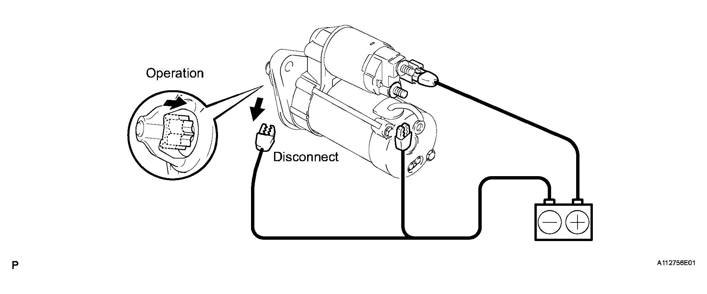
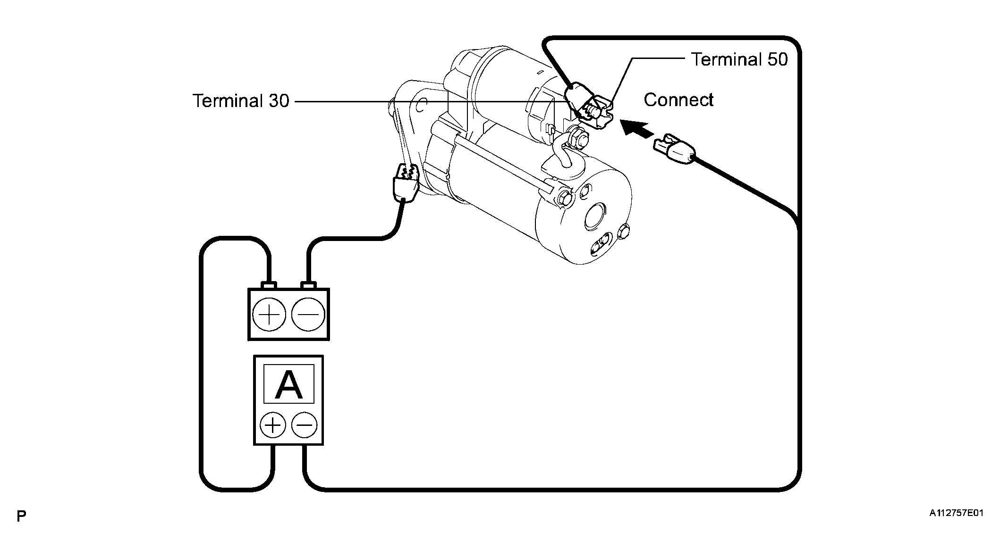

Starting System: Inspection
- INSPECT STARTER ASSEMBLY NOTE: These tests must be performed within 3 to 5 seconds to prevent the coil from burning out.
- Perform pull-in/holding test.
- Disconnect the field coil lead wire from terminal C.
- Connect the battery to the magnet switch as shown in the illustration. Then check that the clutch pinion gear moves outward.
- Disconnect the negative (-) lead from terminal C. Check that the pinion gear remains out.
- Disconnect the negative (-) lead from the starter body. Check that the clutch pinion gear returns inward.

Courtesy of © TOYOTA, LICENSE AGREEMENT TMS1002If the result is not as specified, replace the magnet switch body.
- Perform operation test without load.
- Connect the field coil lead wire to terminal C.
Torque: 5.9 N*m (60 kgf*cm, 52 in.*lbf)
- Grip the starter with a vise.
- Connect the battery and ammeter to the starter as shown in the illustration.
- Check that the starter rotates smoothly and steadily while the pinion gear is moving outward. Then measure the current.
Standard current: 90 A or less at 11.5 V

Courtesy of © TOYOTA, LICENSE AGREEMENT TMS1002If the result is not as specified, replace the magnet switch body.
- Connect the field coil lead wire to terminal C.
- Perform pull-in/holding test.